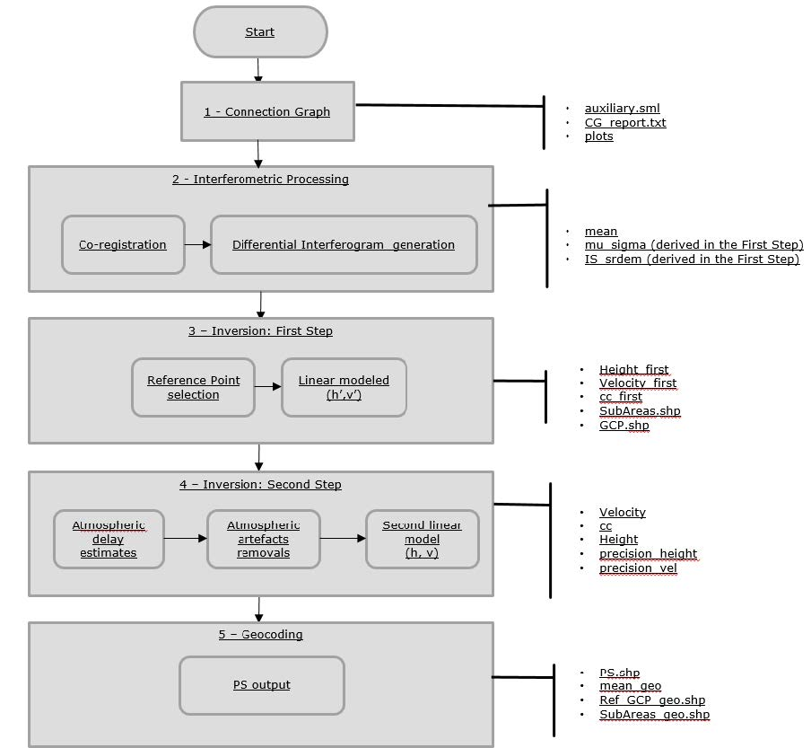

InSAR Basics
InSAR Basic
Whats SAR InSAR
InSAR Tutorials and Courses
The official site of Sentinel.
But there are a lot of other ones, in case the official one is not suitbale for you.
There are lots of tutorials and courses4
ESA tutorials
Copernicus Research and User Support (RUS) (RUS lectures)
ESA polarimetry course 2019
ESA Land Training 2019
ASF data recipes
Echoes in Space (free registration required)
EO4Society
NASA webinars and tutorials
NASA ARSET
MIT lecture
UAF lecture
SARTutor(login: student, pw: student)
NRCan
TRE ALTAMIRA
Youtube channels:
ESA SNAP
Echoes in Space
Remote Sensing & GIS
MrGIS
Geo2004
RUS Copernicus
SBAS-InSAR
Small baseline differential interferograms generation
The differential interferometric phase is as follows:
where is the differential interferometric phase, is the deformation phase including the line deformation and non-line deformation phases, is the topographic phase, is the atmpspheric phase, is the orbit phase, and is the noise phase.
Interferometric point analysis
The residual phase includes the atmospheric, non-linear deformation, and noise phases.
The non-linear phase shows a high correlation in the spatial domain, while the atmospheric delay shows a high correlation in the spatial domain and low correlation in the temporal domain.
Noise shows a low correlation in both the spatial and temporal domains.
Low-pass and High-pass filter
First, the low-pass filtering in the spatial domain is used to suppress the noise phase from the residual. Secondly, in the temporal domain, the low-pass filtering is again used for spatially filtered residual phases to identify the non-linear phase. Thirdly, we superpose the non-linear phase to the linear phase to acquire the complete deformation phase. Finally, phase unwrapping is used to acquire the deformation with point targets.
PS-InSAR
The PS technique is one of the multi-temporal Differential interferometric Synthetic Aperture Radar (DInSAR) techniques which is based on the basic principles of the interferometry1.
The PS technique is based on:
- the identification of point targets (single pixels or group of pixels) which are radiometrically stable in time. The point targets are characterized by strong reflection (high backscatter) and high coherence in the observation period. Radiometrically stable targets are urban infrastructures (buildings, bridges, greenhouses, dams, metallic features, etc) or natural objects (outcrops, exposed rocks etc.).
- the availability of a high number of input images for the pixel coherence estimation. The larger the number of acquisitions the better the reliability and quality of the measured PS deformation (in terms of displacement and velocity) and their temporal evolution. A minimum of 20 acquisitions are needed to perform PS analysis to obtained reliable results2.
- the linear model used as assumption to derive the estimate deformations. Non-linearity can be detected if the displacement between two consecutive acquisitions does not exceed λ/4.
The better the reference Digital Elevation Model accuracy/resolution the better the result in terms of topography removal.
The selection of the stable ground control point is based on the identification of a defined number of candidates (by default 5 in SARscape). The candidate’s selection is based on the Amplitude Dispersion Index (D), which is defined as
Where μ is the temporal amplitude mean value for the single pixel and σ is the temporal standard deviation. Once the candidates are identified, for each one of them , and temporal coherence are computed. The candidate restituting the highest temporal coherence is select as the stable ground control point.
Once the Reference Points are identified, a linear model is used to estimate the residual height (H’) and displacement velocity (V’) from all the re-flattened interferograms and and are computed for each pixel.
The velocity, height, coherence and displacements are computed without atmospheric compensation.
The atmospheric component has high spatial correlation and low temporal correlation, to estimate the atmospheric effect, the Second Inversion is performed.

StaMPS-InSAR
Processing is controlled by the following parameters3:
| Parameter | Default | Description |
|---|---|---|
| max_topo_err | 20 (10) | Maximum uncorrelated DEM error (in m). Pixels with uncorrelated DEM error greater than this will not be picked. This includes error due to the phase center of the resolution element being off-set from the middle of the pixel in range). Setting this higher, however, increases the mean value (coherence-like measure) of pixels that have random phase. Typical values are around 10 m. |
| filter_grid_size | 50 | Pixel size of grid (in m). Candidate pixels are resampled to a grid with this spacing before filtering to determine the spatially-correlated phase. First, the noise term must be isolated in order to assess the phase stability. To do this, the first four terms on the right side of equation are estimated for each point and subtracted from the measured phase. The first three and parts of the fourth term are spatially correlated and can be estimated using adaptive bandpass filtering. This bandpass filtering is based on the combination of a simple low pass filter with an adaptive filter in the frequency domain, wherein the transfer function of the adaptive part of the filter is calculated on the basis of the smoothed data spectrum. The construction of this adaptive filter portion is based on the Goldstein phase filter. For the application of this filter technique, the irregular grid of the provisionally selected points must be transformed to a regular grid, whereby the grid width must be sufficiently small, so that over an element of this grid no strong variation in the phase takes place (typical values would be 40 to 100 m). The filter works like the Goldstein filter on individual sections of the image (windowed Fourier transformation). |
| filter_weighting | ‘P-square’ | Candidate pixels are weighted during resampling according to this scheme. P-squared was found to be better. |
| clap_win | 32 | CLAP (Combined Low-pass and Adaptive Phase) filter window size (pixel x pixel). Depending on over what distance pixels are expected to remain spatially correlated. Together with filter grid size, determines the area included in the spatially-correlated phase estimation. The 2-D FFT is applied to a grid size of typically 32 x 32 or 64 x 64 cells, depending on over what distance we expect pixels to remain spatially correlated. |
| clap_alpha | 1 | Weighting parameter for phase filtering (CLAP term). Together with the term, determines the relative contribution of the low-pass and adaptive phase elements to the CLAP filter. The adaptive phase filter response, , is combined with a narrow low-pass filter response, , to form the new filter response, where is a fifth-order Butterworth filter, with a typical cutoff wavelength of 800 m, and are adjustable weighting parameters (typical values being 1 and 0.3, respectively, and is the median value of |
| clap_beta | 0.3 | Weighting parameter for phase filtering (CLAP term). |
| weed_standard_dev | 1 | Threshold standard deviation. For each pixel, the phase noise standard deviation for all pixel pairs including the pixel is calculated. If the minimum standard deviation is greater than the threshold, the pixel is dropped. If set to 10, no noise-based weeding is performed. Increasing the SD increases the selected PS but also the noise level.(1-1.2) are good initial values. |
| weed_time_win | 730 | Smoothing window (in days) for estimating phase noise distribution for each pair of neighbouring pixels. The time series phase for each pair is smoothed using a Gaussian-weighted piecewise linear fit. weed-time-win specifies the standard deviation of the Gaussian. The original phase minus the smoothed phase is assumed to be noise. |
| weed_neighbours | ‘n’ | Flag for proximity weeding. If set to ‘y’, pixels are dropped based in their proximity to each other. A Scatterer that is bright can dominate pixels other than the pixel corresponding to its physical location. The error in look angle and squint angle due to the offset of the pixel from the physical location usually results in these pixels not being selected as PS. However, the slight oversampling of the resolution cells can cause pixels immediately adjacent to the PS pixel to be dominated by the same scatterer where the error may be sufficiently small that the pixel appears stable. To avoid picking these pixels, we assume that adjacent pixels selected as PS are due to the same dominant scatterer. As we expect the pixel that corresponds to the physical location to have the highest SNR, for groups of adjacent stable pixels we select as the PS only the pixel with the highest value of . Should be set to ‘y’ |
| unwrap_prefilter_flag | ‘y’ | Prefilter phase before unwrapping to reduce noise. SCLA (spatially-correlated look angle) and AOE (atmosphere and orbit error) subtraction is applied when step 6 is redone after step 7. To avoid subtraction use scla_reset |
本博客所有文章除特别声明外，均采用 CC BY-SA 4.0 协议 ，转载请注明出处！